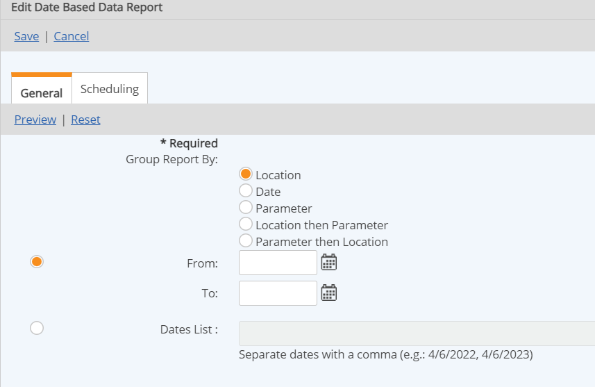
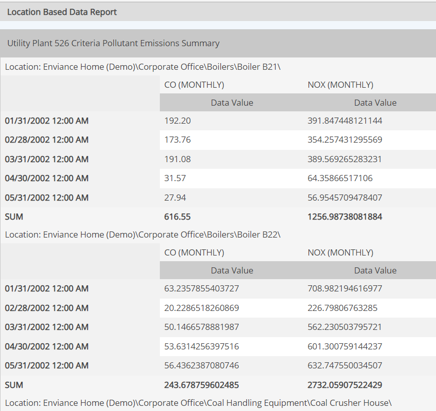
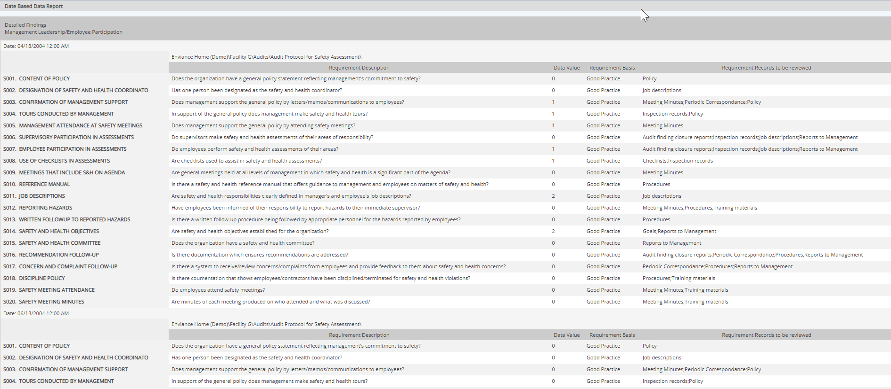
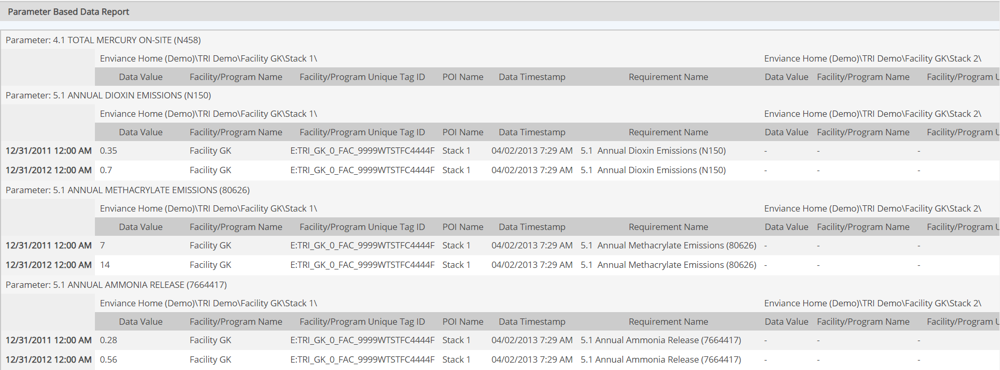
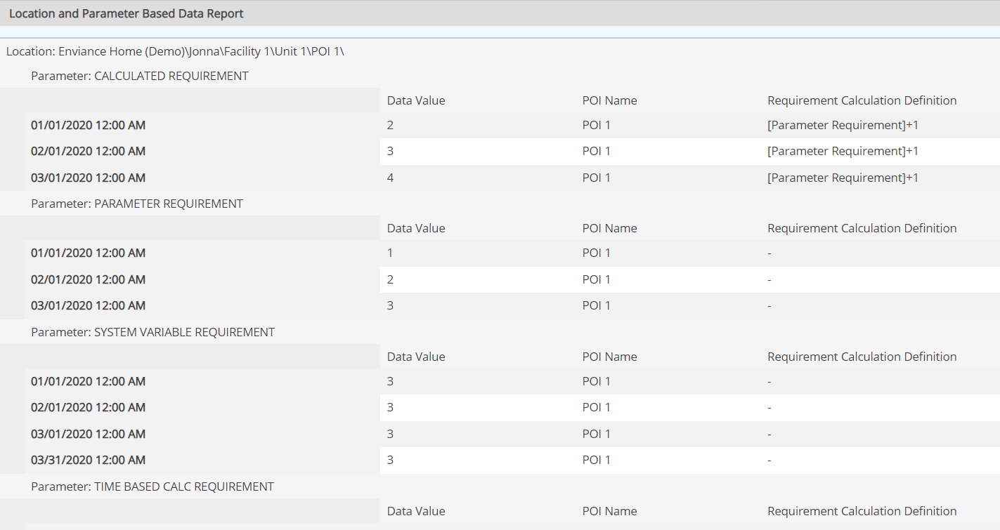

Grouping options are available for Data Reports.

A Data Report may be grouped by Location, by Date or by Parameter, or by a combination of Location and Parameter. When the report is grouped by one property, the other two properties are used as the column and row headers. The data is output at the intersection of the row and column.
You can change the orientation of the report by checking the option to Switch Rows and Columns in the General Report Description section.
A description and example of each type follows.
This option groups the report data by the parent object of the requirements in the system model.

This option groups the report data by the entry date of the Data Value.

This option groups the report data by the requirement name.

This option groups the report data by the Location first, the requirement name.

This option groups the report data by the requirement name first, then by Location.